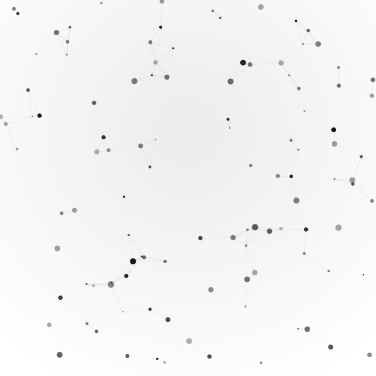

#houdini · media artist
여러 가변성이 만들어내는 자유로움을 미디어아트로 표현하는 작가 김기욱입니다. 저는 움직임, 입자, 빛, 흐름이 끊임없이 변화하는 순간에 주목합니다. 고정된 형태보다 계속해서 흩어지고 모이고, 밀려나고 다시 섞이는 과정 속에서 감정과 분위기를 시각적으로 풀어내고자 합니다. 작업을 통해 관람자가 변화하는 이미지 안에서 자유로움, 입체감, 그리고 몰입감을 동시에 경험하길 바랍니다.